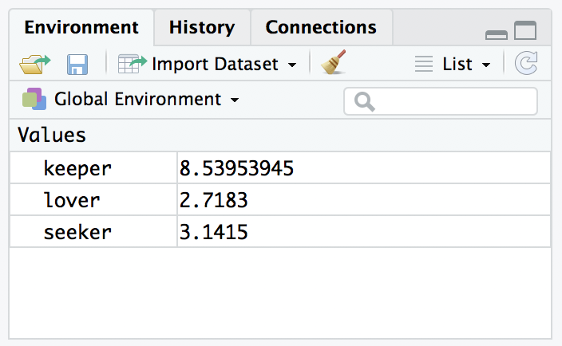
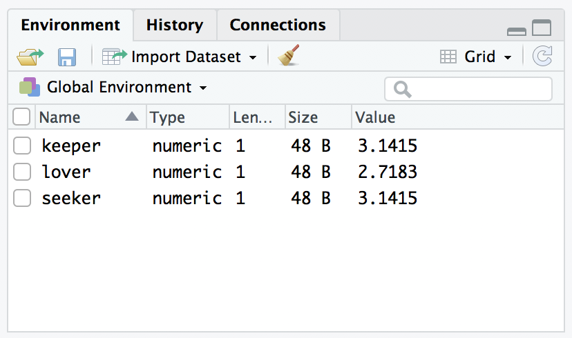

seeker <- 3.1415
lover <- 2.7183
keeper <- seeker * lover 5. Workspaces
Let’s suppose that you’re reading through these notes, and typing in commands as I’ve been presenting them. During the section on scripts, you might have typed these commands
In doing so you would have created three variables. These variables are the contents of your workspace, also referred to as the “global environment”. The workspace is a key concept in R, so in this section we’ll talk about what it is and how to manage its contents.
1 Workspace contents
The first thing that you need to know how to do is examine the contents of the workspace. If you’re using RStudio, you will probably find that the easiest way to do this is to use the “Environment” panel in the top right hand corner. Click on that, and you’ll see a list that looks very much like the one shown below.

If you’re using the commmand line, then the objects function may come in handy:
objects()[1] "keeper" "lover" "seeker"Of course, in the true R tradition, the objects function has a lot of fancy capabilities that I’m glossing over in this example. Moreover there are also several other functions that you can use, including ls which is pretty much identical to objects, and ls.str which you can use to get a fairly detailed description of all the variables in the workspace. As a compromise, the lsr package that I wrote to accompany Learning Statistics with R has a simple function that you can use for this purpose, called who, that loosely mirrors the contents of the environment panel. So let’s load the package
library(lsr)and now we can use the who function:
who() -- Name -- -- Class -- -- Size --
keeper numeric 1
lover numeric 1
seeker numeric 1 In these notes I use the who function quite a bit, but in real life I almost never bother: I find it easier to look at the RStudio environment panel. But for the purposes of writing thes notes I found it handy to have a nice text based description, just so that I don’t have to take screenshots every time!
2 Removing variables
Looking over that list of variables, it occurs to me that I really don’t need them any more. I created them originally just to make a point, but they don’t serve any useful purpose anymore, and now I want to get rid of them. I’ll show you how to do this, but first I want to warn you – there’s no “undo” option for variable removal. Once a variable is removed, it’s gone forever unless you save it to disk. I’ll show you how to do that in a moment, but quite clearly we have no need for these variables at all, so we can safely get rid of them.
In RStudio, the easiest way to remove variables is to use the environment panel. If you switch to “grid view” using the drop down menu in the top right of the panel you’ll see something like this:

Check the boxes next to the variables that you want to delete, then click on the “Clear” button at the top of the panel (that’s the one that looks like a broom!) When you do this, RStudio will show a dialog box asking you to confirm that you really do want to delete the variables. It’s always worth checking that you really do, because as RStudio is at pains to point out, you can’t undo this. Once a variable is deleted, it’s gone.1 In any case, if you click “yes”, that variable will disappear from the workspace: it will no longer appear in the environment pane, and it won’t show up when you use the who command.
Suppose you don’t have access to RStudio, and you still want to remove variables. This is where the remove function rm comes in handy. The simplest way to use rm is just to type in a (comma separated) list of all the variables you want to remove. Let’s say I want to get rid of seeker and lover, but I would like to keep keeper. To do this, all I have to do is type:
rm(seeker, lover)There’s no visible output, but if I now inspect the workspace
who() -- Name -- -- Class -- -- Size --
keeper numeric 1 I see that there’s only the keeper variable left. As you can see, rm can be handy for keeping the workspace tidy.
3 Loading a workspace
There are many different ways in which you might want to save data sets and results in R. One simple method is simply to save the entire contents of your workspace to a file, and to load that workspace file later on. An R workspace file has the .Rdata file extension, and to load one into R we use the load function. To illustrate how it works, I’ll use a workspace that I constructed when writing Learning Statistics in R, based loosely on the kids TV show In the Night Garden…. The workspace file is located at ./data/nightgarden.Rdata (remember, the . refers to the current folder) and so to load it all I have to do is this:
load("./data/nightgarden.Rdata")If I now inspect the workspace, I see that I have two new variables, speaker and utterance:
who() -- Name -- -- Class -- -- Size --
keeper numeric 1
speaker character 10
utterance character 10 Notice that the keeper variable is still there. Loading a new workspace from a file doesn’t remove the variables already present; but it will overwrite any variables if they happen to have the same name. For example, if I had previously had a variable called speaker, it would now have been overwritten using the value from the file.
There’s a second method I want to mention, using the RStudio file pane? It’s terribly simple. First, use the file pane to find the folder that contains the file you want to load. If you look at the image of the file pane that I showed above, you can see that there are several .Rdata files listed. All I have to do is click on the file I want to open, and RStudio will bring up a dialog box asking me to confirm that I do want to load this file. After clicking yes, RStudio will load the file for you.
4 Saving a workspace
Not surprisingly, saving data is very similar to loading data. Although RStudio provides a simple way to save files (see below), it’s worth understanding the actual commands involved. There are two commands you can use to do this, save and save.image. If you’re happy to save all of the variables in your workspace into the data file, then you should use save.image. So let’s suppose I want to save the current workspace to a file called myfile.Rdata inside the output folder.2 To do so, here’s the command:
save.image(file = "./output/myfile.Rdata")As usual, this file now actually exists at ./output/myfile.Rdata. Suppose, however, I have several variables in my workspace, and I only want to save some of them. For instance, let’s actually take a look at the current state of my workspace at this point in the book:
who() -- Name -- -- Class -- -- Size --
keeper numeric 1
speaker character 10
utterance character 10 There’s a few different things there because I’ve been working on different data sets, and I might not want to save all of them. This is where the save function is useful, because it lets me indicate exactly which variables I want to save. Here is one way I can use the save function to solve my problem:
save(keeper, speaker, file = "./output/myfile2.Rdata")This will save only the keeper and speaker variables, which you can confirm if you like by downloading the file that I just created 😀
One important think to note about the save function: you must specify the name of the file argument (i.e., the file = part of the command). The reason is that if you don’t do so, R will think that the text specifying the save location is just one more variable that you want to save, and you’ll get an error message. Finally, I should mention a second way to specify which variables the save function should save, which is to use the list argument. You do so like this:
save(
list = c("keeper", "speaker"),
file = "./output/myfile3.Rdata"
)The myfile3.Rdata file is the same as the myfile2.Rdata file: these two commands do exactly the same thing.
Finally, I should mention that RStudio allows you to save the workspace pretty easily. In the environment panel (on the top right) you can see the “save” button. There’s no text, but it’s the same icon that gets used on every computer everywhere: it’s the one that looks like a floppy disk.3 Alternatively, go to the “Session” menu and click on the “Save Workspace As…” option. This will bring up the standard “save” dialog box for your operating system. Type in the name of the file that you want to save it to, and all the variables in your workspace will be saved to disk.
One word of warning: what you don’t want to do is use the “File” menu to save the workspace. If you look in the “File” menu you will see “Save” and “Save As…” options, but they don’t save the workspace. Those options are used for dealing with scripts, and so they’ll produce .R rather than .Rdata files.
5 Exercises
For the first exercise, let’s make sure you understand how to load and save workspaces:
- Create a few variables, and save them to a workspace file
- Close RStudio, reopen it, and then reload your workspace file
For the second exercise, we’ll focus on the housekeeping aspect:
- Use the RStudio environment pane to remove a variables
- Use the
rmcommand to remove a variable
The solutions for these exercises are here and a copy of the workspace file it generates is here.
Footnotes
Mind you, all that means is that it’s been removed from the workspace. If you’ve got the data saved to file somewhere, then that file is perfectly safe.↩︎
It’s generally a good idea to keep your files nicely organised when working on a project, which is why I’m keeping the
datafolder separate from anyoutputthat I produce.↩︎You know, those things that haven’t been used in about 20 years.↩︎